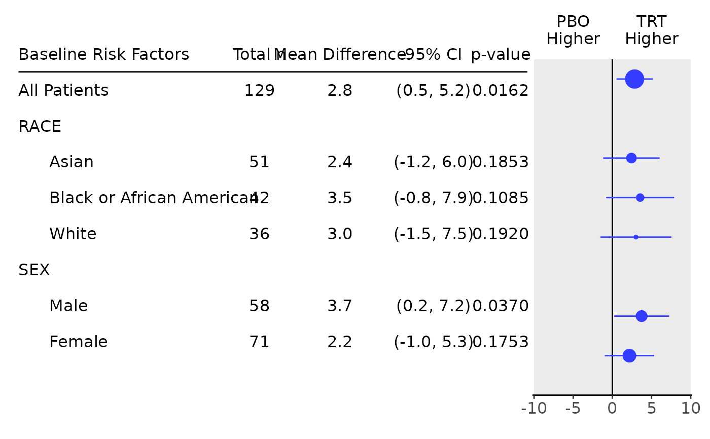

![[Experimental]](figures/lifecycle-experimental.svg)
This function tabulates the results from extract_mmrm_subgroups().
Usage
tabulate_mmrm_subgroups(
lyt,
df,
vars = c("n_tot", "n", "lsmean", "diff", "ci"),
.formats = list(n = "xx", n_tot = "xx", lsmean = "xx.x", diff = "xx.x", ci =
"(xx.x, xx.x)", pval = "x.xxxx | (<0.0001)"),
.labels = list(n = "n", n_tot = "Total n", lsmean = "Mean", diff = "Mean Difference",
ci = paste0(round(100 * df$contrasts$conf_level[1]), "% CI"), pval = "p-value")
)Arguments
- lyt
(
layout)
input layout where analyses will be added to.- df
(
list)
of data frames containing all analysis variables, is the result fromextract_mmrm_subgroups().- vars
(
character)
the name of statistics to be reported amongn_tot(total number of patients per group),n(number of patients per treatment arm and group),lsmean(least square mean point estimate),diff(difference of least square mean estimates between treatment and reference arm),ci(confidence interval of difference) andpval(p value of thediff, not adjusted for multiple comparisons). Note, the statisticsn_tot,diffandciare required.- .formats
(named
list)
containing the formats for the statistics.- .labels
(named
list)
containing the labels for the statistics.
Examples
mmrm_results <- fit_mmrm(
vars = list(
response = "FEV1",
covariates = "RACE",
id = "USUBJID",
arm = "ARMCD",
visit = "AVISIT"
),
data = mmrm_test_data,
cor_struct = "compound symmetry",
weights_emmeans = "equal",
averages_emmeans = list(
"VIS1+2" = c("VIS1", "VIS2")
)
)
df <- extract_mmrm_subgroups(
fit = mmrm_results,
visit = "VIS3",
subgroups = c("RACE", "SEX")
)
## Table with default columns.
basic_table() %>%
tabulate_mmrm_subgroups(df)
#> PBO TRT
#> Baseline Risk Factors Total n n Mean n Mean Mean Difference 95% CI
#> —————————————————————————————————————————————————————————————————————————————————————————————
#> All Patients 129 71 43.7 58 46.5 2.8 (0.5, 5.2)
#> RACE
#> Asian 51 27 41.4 24 43.8 2.4 (-1.2, 6.0)
#> Black or African American 42 29 42.6 13 46.1 3.5 (-0.8, 7.9)
#> White 36 15 47.0 21 50.0 3.0 (-1.5, 7.5)
#> SEX
#> Male 58 35 43.0 23 46.7 3.7 (0.2, 7.2)
#> Female 71 36 44.2 35 46.4 2.2 (-1.0, 5.3)
## Table with selected columns.
tab <- basic_table() %>%
tabulate_mmrm_subgroups(
df = df,
vars = c("n_tot", "diff", "ci", "pval")
)
tab
#> Baseline Risk Factors Total n Mean Difference 95% CI p-value
#> ———————————————————————————————————————————————————————————————————————————————
#> All Patients 129 2.8 (0.5, 5.2) 0.0162
#> RACE
#> Asian 51 2.4 (-1.2, 6.0) 0.1853
#> Black or African American 42 3.5 (-0.8, 7.9) 0.1085
#> White 36 3.0 (-1.5, 7.5) 0.1920
#> SEX
#> Male 58 3.7 (0.2, 7.2) 0.0370
#> Female 71 2.2 (-1.0, 5.3) 0.1753
## Forest plot can be produced based on this very easily.
g_forest(tab, logx = FALSE, xlim = c(-10, 10), x_at = c(-10, -5, 0, 5, 10), vline = 0)
